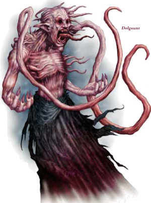
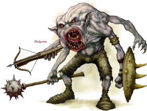

Week 17 - But first, some minions
Flash asks about for "The Cold Forge". He is directed in short order to the Cogs under Sharn (by a pirate, it would seem). Asking about some more, he finds that the Cold Forge is a smithing establishment in Khyber's Gate. Travelling there, they discover that the Cold Forge does indeed do small-lot cold rolling and finishing - hence the name and the location (heavier industry resides in Ashblack, with access to the lava). There is a grate nearby opening onto passages linking up to the sewers, and a patch of the phosphorescent fungus: "Beggar's Gold". They are on the right track.
They begin tracking. Their information makes the job easier, but it still takes all day. In the course of the day they encounter and deal with a Gelatinous Cube, but no-one takes serious hurt. Eventually, they find what they believe to be the entrance to the Mind-Flayer's lair. They opt to retire for the day and return tomorrow. As they have Arn the dwarf with them, this presents no difficulty.
The party enter cautiously. The notice more Beggar's Gold and three large, purple mushrooms. Flash recognises these as Shreikers, making this a simple but effective alarm. he uses a Silence spell to temporarily disable them. The party walk into the chamber but - oh no! - fail to spot that the fungus is not Beggars Gold at all, but the far more dangerous Yellow Mold. Jericho and Arn walk into a cloud of deadly spores, but manage to shake off the effect. As yellow mold is vulnerable to fire, they use a fireball to clear the area, and then deal with the harmless shriekers before the silence wears off.
Further up is a concealed ledge where some Kenku rogue/rangers are waiting. As the party dealt with the alarm, they are not alerted (or indeed, alarmed - damn, there are one or two things I will miss about John Howard). They spot the party, and fire some arrows. Flash grants Spider Climb to Frith (an odd choice, but I suppose it seemed like a good idea at the time). Tom simply climbs the wall. The rest of the party below fire missiles at whichever Kenkus they can reach. Eventually, the party defeats them.
There is an Eberron conversion for Age of Worms, but I tampered with it a little here to give this party a bit more of a challenge. The Kenkus were Rogue 2/Ranger 2, with sneak attack and rapid shot from class levels and point-blank and precise shot as feats. If the party had alerted them, they would have used Oil of Darkness on their position to cover their attacks, firing from their darkened area into the area lit by the party's torches. But, c’est la D&D.
Shortly after, Jericho and Arn shake off the lingering effect of the Yellow Mold that they inhaled without further ill effect.
In the next room is a Naga - Fassash - who has heard the combat with the sentries and is ready for the party. But, it reacts a little too slowly. Arn leaps to the attack, using his extend-o-arm bracers. Tom and the rest of the party follow. Fassassh is cut down before making a move.
Now … at this point I had a major dummy-spit, if a quiet internal one. The Naga was a CR 9 Spirit Naga that was cut down in one round with the help of some underpriced cheese from the Magic Item Compendium. I am convinced that Wizards of the Coast released this book to ruin 3.5 so that people will play version 4 when it comes out.
In the next room, the foe is again waiting. Three dolgaunts - hideous, twisted mockeries of bugbears - are standing, ready for the attack. Behind them are a row of dolgrims - deformed things made from two goblins imperfectly squished together. These are armed with a pair of longspears each. Tom moves forward, and the battle is joined. A few moments later, another dolgaunt moves in behind the line and begins casting spells.
The dolgrims were really quite special - I threw them in extra, and I call 'em "Dolgrim Spear Wall". They were NPC Warrior 3s, using the standard array (ie: not the elite array), so there's no question of them being overpowered or unfair. Their feats were Monkey Grip (Complete Warrior) and Distracting Combatant (Minatures Handbook). Being Dolgrims, they get one attack with a second weapon at no penalty. Monkey Grip allows them to use a longspear one-handed, so they can be behind the heavy-hitters, and you can sic more of them onto a single character. And Distracting Combatant means that allies get a cumulative +1 circumstance bonus to hit, whether or not the dolgrim hits! best of all, they are NPC Warrior 3 and only worth piddling amounts of XP. A bargain! Unfortunately, I missed a couple of the details on game night. By rights, the dolgaunts would have been at +10 to hit Tom. I should have had all three of them sucking his Con with tentacle attacks.
Speaking of which, a grapple has 4 steps: AAO, touch attack, establish grapple (and do damage), and move in. There are rules dictating what happens if you can't move in, so it's clear that a grappler can simply opt to release the grapple and not move in. The dolgaunts still do the Con damage because that happens in step 3, but by opting to release instead of proceeding with step 4 they do not subsequently suffer the penalties of being involved in a grapple.
Myriannas, a cleric of The Dragon Below, disables both Arn and Tom for a few rounds each, but not before Tom has destroyed all of the dolgrims with a single cleaving blow. The party slay the Dolgaunt monks and move after Myriannas herself. She turns out to be a very tough foe, as her various magical protections make landing a blow extremely difficult. Eventually, after a long fight, she succumbs.
My fellow DMs - do not allow a player to play a half-ogre with Great Cleave. Just Say No. Really. Bring a bag of “No” with you to the table if it's a possibility that a player will try it on.
And that's it for now. XP is up, but no-one may level up just at the moment as we are right in the middle of things. Kindly also remember to retain your spells and daily item use expenditure for next session. Please excuse my ungraciousness at the close of last session. There were reasons for it that were nothing to do with you guys. And make double sure that you can manage a Protection from Evil for everyone.